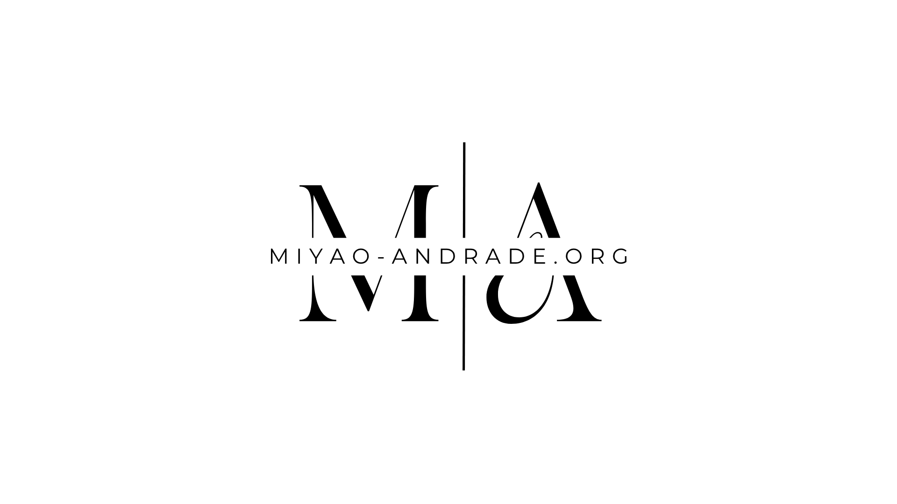
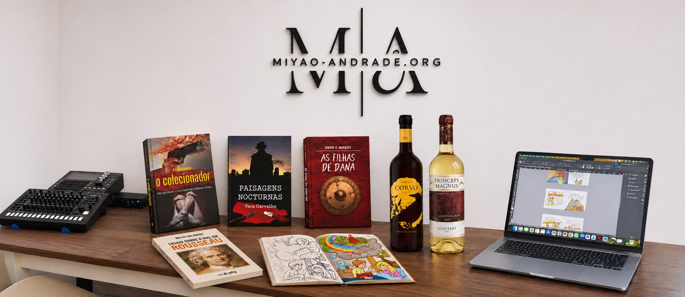
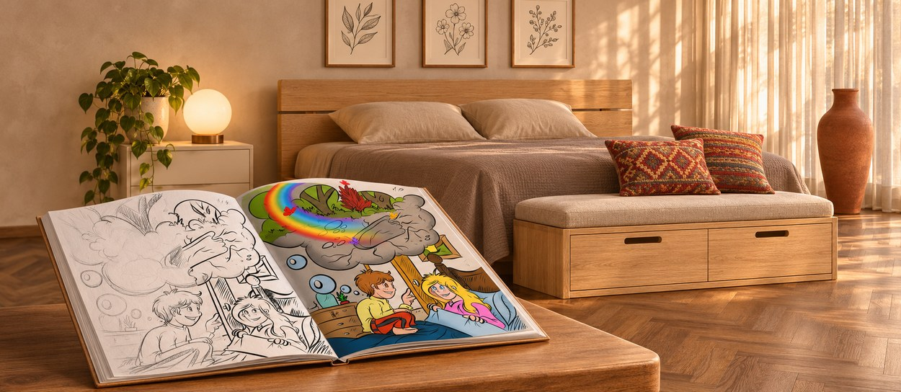
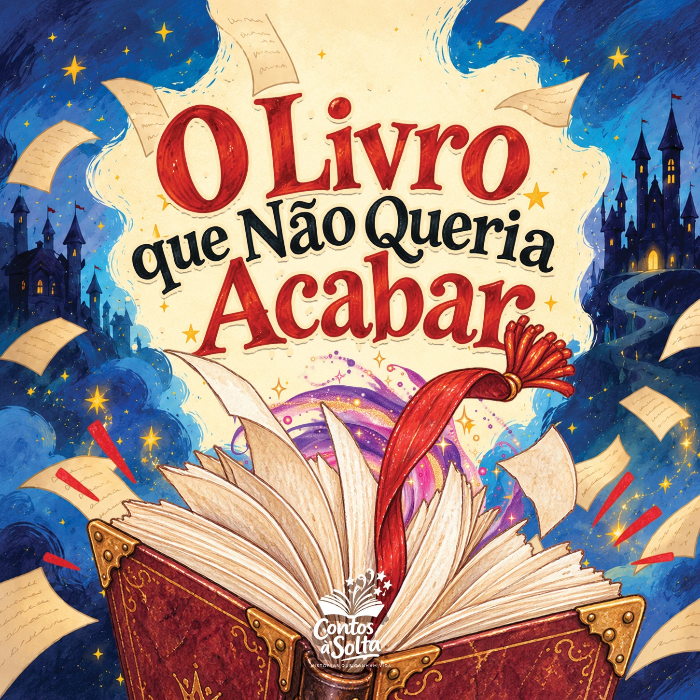

Design editorial · Ilustração
Um álbum infantil que convida os leitores a inventarem o seu próprio final.

O estúdio de Patrícia e Shu
Criamos livros ilustrados, damos forma a marcas, desenvolvemos sites e planeamos campanhas para redes sociais.

Portefólio
Design editorial · Ilustração
Um álbum infantil que convida os leitores a inventarem o seu próprio final.
Vídeo promocional
Um vídeo de divulgação para um projecto de histórias em escolas e bibliotecas.
Design gráfico · Rótulos
Criamos rotulagem para todo o tipo de embalagens, incluindo garrafas de vinho.
Visualização 3D
Do modelo em SketchUp à visualização do quarto à luz do fim da tarde.
Design gráfico
O Colecionador, Paisagens Nocturnas e As Filhas de Dana.
Ilustração · Personagens
Um esquilo travesso e um monstro que tem medo de crianças.
Serviços
Trabalhamos com autores, editoras e marcas, desde o primeiro esboço até à impressão, à publicação do site ou ao lançamento da campanha.
Falar sobre um projectoCapas, paginação e preparação de ficheiros para impressão. Livros infantis, ficção e outras publicações.
Personagens, cenários, capas e interiores de livros, com desenho manual e acabamento digital.
Trailers de livros, spots de lançamento e vídeos curtos com montagem, texto e animação.
Logótipos, rótulos e peças gráficas para apresentar produtos e dar consistência à marca.
Desenhamos a estrutura, a navegação e o aspecto de cada página, do ecrã do telemóvel ao computador.
Desenvolvemos sites à medida e implementamos funcionalidades como formulários de contacto e galerias de portefólio.
Planeamos campanhas e calendários editoriais. Criamos textos, imagens e vídeos para divulgar marcas, livros e lançamentos.
Modelos em SketchUp e imagens de interiores para comunicar materiais, luz e ambiente.

A equipa
Somos a dupla por trás da Miyao-Andrade. No nosso estúdio em Portugal, trabalhamos entre o papel e o ecrã. Um livro pode começar com o desenho de uma personagem e ganhar um trailer, um site ou uma campanha de lançamento.
A Patrícia é designer e ilustradora, com formação em pré-impressão. Acompanha os livros da paginação à preparação dos ficheiros para a gráfica.
O Shu é programador web e desenvolve sites à medida.
Percurso da Patrícia no LinkedInContacto
Conta-nos o que estás a preparar, de que peças precisas e para quando. Se tiveres referências, envia-nos os links ou imagens.
Capas · Paginação · Ilustração
Projecto autoral de Contos Itinerantes à Solta. A Princesa Violeta, o Cavaleiro Ambrósio Ferrugem, o burro Baltazar e a Bruxa Bonifácia atravessam uma história que deixa espaço para o leitor criar o seu próprio final.

Conhecer o livro no site dos ContosDesign gráfico · Rótulos
Criamos rotulagem para todo o tipo de embalagens, incluindo garrafas de vinho. O rótulo do vinho tinto Corvo é um exemplo do nosso trabalho.
Visualização 3D
Do modelo em SketchUp à visualização do quarto à luz do fim da tarde.
Design gráfico
O Colecionador, Paisagens Nocturnas e As Filhas de Dana.
Ilustração · Personagens
Personagens de O Esquilo Travesso e O Monstro que Tinha Medo de Crianças, duas histórias de Contos Itinerantes à Solta para os leitores mais novos.
Conhecer as histórias